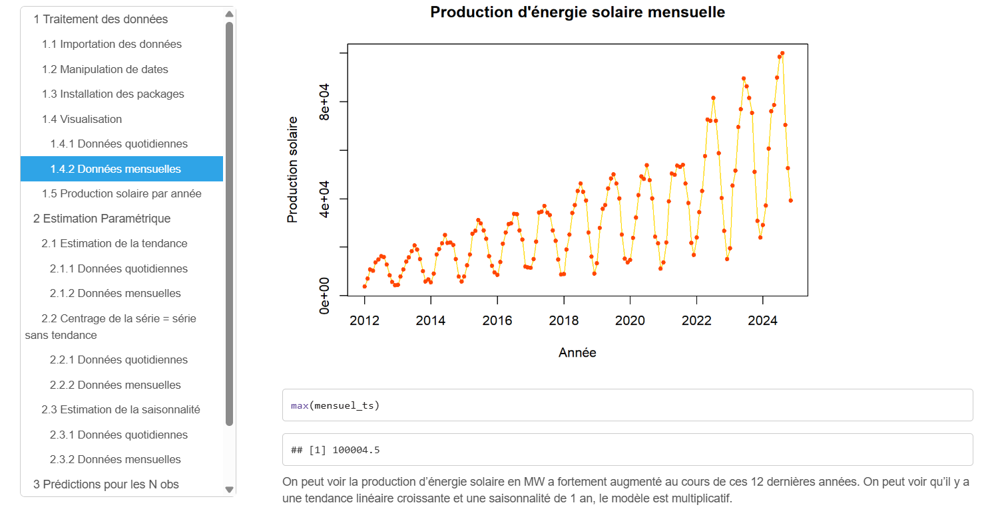

Dans le cadre de la SAÉ 3.03, j’ai été amené à analyser statistiquement une série temporelle représentant la production d’énergie solaire en France, de 2012 à 2025. Cette étude m’a permis de comprendre la spécificité des données chronologiques et d’appliquer des méthodes adaptées à leur traitement, conformément aux objectifs du programme national.
En mobilisant le langage R, j’ai appris à manipuler et modéliser des séries temporelles, en identifiant des tendances linéaires, une forte saisonnalité annuelle et en choisissant un modèle multiplicatif pertinent pour la représentation des données. J’ai travaillé à la fois sur les données journalières et mensuelles pour rendre compte des comportements globaux et des variations fines.
La figure ci-dessus montre une forte croissance de la production solaire, avec des pics saisonniers récurrents. Cette régularité m’a permis de justifier l’utilisation d’un modèle avec saisonnalité annuelle et de commencer une démarche de prévision à court terme.
Le graphique mensuel simplifie l’analyse en faisant ressortir plus clairement la tendance générale. Ces représentations concrètes traduisent la montée en puissance des énergies renouvelables et renforcent l'importance de l’analyse temporelle dans la prise de décisions économiques.
Ce projet m’a permis de développer plusieurs compétences du PN, notamment :
Dans cette SAÉ, j’ai été placé en situation de statisticien pour modéliser une variable quantitative (comme le nombre de points marqués par des joueurs NBA) à partir de plusieurs variables explicatives (taille, temps de jeu, position, nombre de tirs tentés, etc.). L’objectif était de construire un modèle linéaire pertinent et interprétable pour expliquer ou prédire cette variable.
J’ai mobilisé plusieurs outils statistiques, notamment :
Ce graphique représente le processus de sélection du modèle linéaire multivarié appliqué aux données NBA. On y observe les combinaisons de variables explicatives (comme les rebonds, passes, efficacité au tir, etc.) qui permettent de mieux prédire les points marqués par les joueurs. L’échelle verticale montre la qualité d’ajustement (R²), et chaque case noire indique la présence d’une variable dans un modèle donné. Cette analyse permet d’identifier les variables les plus pertinentes à inclure pour maximiser la performance du modèle.
Voici un extrait du modèle exprimant les points marqués par un joueur NBA en fonction de plusieurs variables explicatives, notamment ses statistiques de jeu et son historique de draft
L’analyse des résidus permet de valider la qualité du modèle (homoscédasticité, absence de tendance résiduelle) et d’identifier les points aberrants influents.
Cette SAÉ m’a permis de développer des compétences clés du PN :
Grâce à cette SAE, j’ai mieux compris les enjeux de la modélisation prédictive dans un contexte professionnel, et appris à articuler rigueur mathématique, outils numériques et capacité à justifier mes choix d’analyse.